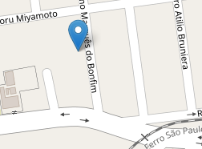
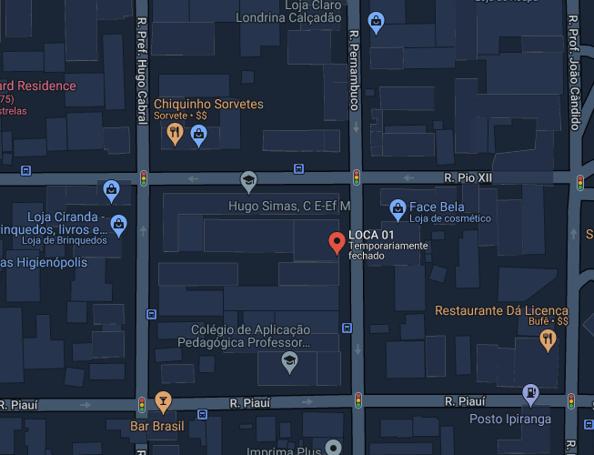

Rua Justino Marques Bonfim
Ponto de coleta mais próximo da sua casa
R. Pernambuco, 500 - Londrina
Mais frequentado.
Ultimamente em Cornelio Procopios está sendo reportado muitos problemas com a questão do lixo, os coletores de lixo estão abrindo as sacolas e espalhando o lixo pela lixeira.
Assim pedimos que caso você esteja em casa no dia em que o caminhão do lixo passar, por favor, coloque o lixo na lixeira de manhã, pois os lixeiros não estão pegando lixo espalhado e deixando a cidade fedida, sendo um incômodo tanto para os moradores como para os lixeiros.
Separação Adequada: Antes de levar o lixo para o ponto de coleta, certifique-se de separá-lo adequadamente de acordo com as diretrizes locais de reciclagem. Isso pode envolver separar materiais como plástico, papel, vidro e metal em recipientes distintos.
Limpeza e Secagem: Lave os materiais recicláveis, como garrafas e latas, para remover resíduos de alimentos ou bebidas. Certifique-se de que estejam completamente secos antes de colocá-los nos recipientes de reciclagem para evitar odores desagradáveis e a contaminação de outros materiais.
Embalagem Adequada: Se necessário, embale os materiais recicláveis em sacos transparentes ou recipientes adequados para transporte. Isso facilita o manuseio e evita derramamentos durante o transporte para o ponto de coleta.
Transporte Seguro: Ao transportar os materiais para o ponto de coleta, certifique-se de fazê-lo de forma segura para evitar danos ou derramamentos. Se estiver levando materiais pesados, como vidro ou metal, use recipientes resistentes ou carrinhos apropriados para transportá-los com segurança.
Horário e Localização: Verifique os horários de funcionamento do ponto de coleta e sua localização antes de sair de casa. Planeje sua visita de acordo com essas informações para garantir que você possa descartar os materiais adequadamente. Seguir as Instruções: Ao chegar ao ponto de coleta, siga as instruções fornecidas pelos funcionários ou placas informativas. Eles podem orientá-lo sobre onde e como descartar os materiais de forma adequada.
Respeite o Ambiente: Lembre-se de respeitar o ambiente e o espaço público ao usar o ponto de coleta. Não deixe lixo ou materiais fora dos recipientes designados e evite qualquer comportamento que possa causar danos ao local.